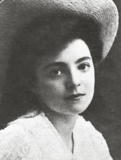

NELLY SACHS
Ngày 22 tháng mười năm 1966, báo chí thế giới đăng tin bà Nelly Sachs, thi sĩ kịch tác gia, mới được giải thưởng văn chương Nobel chung với nhà văn Do Thái Joseph Agnon.
Lúc đó rất ít người biết Nelly Sachs là ai. Rất ít người được nghe tên đó.
Ở vào một thời đại mà người nào ngoài ba mươi lăm tuổi đã bị coi là bắt đầu xuống dốc rồi còn người năm mươi đã là già nua rồi, thì thực là một niềm an ủi, có nhiều ý nghĩa mà Hàn lâm viện Thụy Điển đã lựa hai nhà văn 75 và 78 tuổi để trao giải.
Điều này còn quan trọng hơn nữa là giải thưởng đó phát cho hai nhà văn Do Thái ở thời mà phong trào chống đối Do Thái vẫn chưa xuống và có những kẻ vì quên không được hoặc không muốn quên, lâu lâu lại gợi lên cảnh tượng ghê tởm của các lò thiêu, cho lương tâm nhân loại phải nhớ tới hoài.
Nelly Sachs sanh ngày mùng 10 tháng chạp năm 1891 ở Berlin trong một gia đình phong lưu. Song thân bà là người Do Thái cải giáo, theo Ki tô giáo, do đó bà được dạy dỗ như các trẻ em Ki tô giáo. Chưa hết thời thiếu niên bà đã bắt đầu làm thơ.

Người ta thấy những bài thơ đó chịu ảnh hưởng của các thi sĩ lãng mạn Đức, điều đó dễ hiểu vì bà mới mười bảy tuổi mà thi phái lãng mạn lại có một địa vị rất lớn ở Đức.
Rồi được Selma Lagerlöf và Stefan Zweig khuyến khích, bà cho xuất bản năm 1921 một tuyển tập truyện cổ và truyền kỳ. Một số tạp chí đăng thơ của bà. Nhưng chẳng bao lâu đảng Quốc Xã Đức lên cầm quyền, lần lần cấm ngặt các người Do Thái không được hoạt động chút gì cho quốc gia, sau cùng tận diệt họ.
Nelly Sachs trước kia vẫn tự coi mình là người Đức sống yên ổn, không thắc mắc gì cả, bỗng thấy mình là nạn nhân của chế độ kỳ thị chủng tộc. Bà nhận thức một cách đau xót rằng minh là Do Thái, bị coi là Do Thái, dồn vào cái thế của người Do Thái. Người ta buộc bà phải đổi tên, mang tên là Sarah. Người ta bắt bà phải câm miệng. Từ đó bà thấy mình có trách nhiệm liên đới với dân tộc Do Thái, và bà nghiên cứu Kinh Cựu ước, tìm thấy trong đó một nguồn lớn cảm hứng.
Người yêu của bà bị Quốc Xã Đức ám sát.
Bà hoàn toàn gia nhập phong trào Do Thái, về chủng tộc, triết lý cũng như tôn giáo. Bà đã trở về nguồn.
Trong những hoàn cảnh như vậy mà đi theo con đường đó thì linh hồn và tinh thần đau khổ vô cùng, bị một vết thương không sao lành được, nhưng tấm lòng nhờ vậy được tô lại, mà ngọn bút hóa cứng cỏi hơn. Sự đau khổ nâng cao tâm hồn, mở rộng nhãn quang con người.
Ở Đức, các biến cố chính trị dồn dập xảy ra, năm 1940, chỉ nhờ Hoàng thân Eugène ở Thụy Điển can thiệp mà Nelly Sachs mới khỏi bị nhốt khám và bị đày. Lại nhờ Selma Lagerlöf và một bà bạn thân, người Đức, giúp sức mà Nelly Sachs trốn qua Thụy Điển với thân mẫu được.
Bà định cư ở Stockholm, nhập tịch Thụy Điển. Phải xây dựng lại hết bằng hai bàn tay trắng, và trước nhất phải học liếng Thụy Điển đã, tổ chức cuộc đòi lưu vong.
Ở Stockholm, kinh rạch chằng chịt cũng như đại lộ các thị trấn khác; chính trong một phòng trên một con kinh đó mà bà đã nỗi danh. Các ký giả lại đó phỏng vấn bà. Họ hỏi về cảm tưởng của bà, bà đáp: “Tôi chỉ cảm thấy là một con người thôi. Có lẽ khi người ta đã trải qua những cảnh ghê tởm như vậy thì suốt đời người ta không sao có thể thực sự sung sướng được nữa...”.
Vậy mà tnrớc cái ngày tháng mười năm 1946 đó, điều mà bà tưởng không sao xảy ra được, đã xảy ra mới lạ chứ: bà được trở về Đức. Ở đó người ta mong đợi bà và ba lần ước ao bà về. Vì trước khi bà được giải thưởng Nobel, trên thế giới ít ai biết tên tuổi bà, nhưng trái lại ở Thụy Điển và Đức, giới trí thức không lạ gì văn tài đặc biệt của bà, họ trọng bà lắm. Năm 1960 bà đã được giải thưởng Drcoste - Hulsoff ở Meersburg; năm 1961 được giải thưởng Văn hóa của thị trấn Dortmund, và tháng mười năm 1965, được giải của Các Nhà Sách Đức.

Bà bảo: “Mới đầu tôi cho về Đức là chuyện khổ tâm, nhưng rồi tôi thấy ở đây có một lớp văn sĩ trẻ cơ hồ không giống các lớp văn sĩ già...”.
Ở Dortmund bà đã bảo thanh niên rằng những người cầm bút chỉ có thể có mỗi nhiệm vụ này là đoàn kết nhau lại đế chinh phục cho được Hòa bình; trên thế giới chỉ có mỗi sự chinh phục đó là không làm đổ lệ mà trái lại làm nở được nụ cười.
Rồi bà được giải Nobel. Hàn lâm viện Thụy Điển giảng vì lẽ gì đã lựa bà để tặng giải.
“Nelly Sachs, cũng như nhiều văn sĩ Đức gốc Do Thái, đã chịu cái cảnh lưu vong. Thụy Điển đã can thiệp để bà khỏi bị ngược đãi, khỏi bị đày và đã cho phép bà trú ngụ. Và từ ngày một cơn giông tố lịch sử đánh bạt bà qua đây, bà ở ẩn và sáng tác, tài năng già giặn lên, được trọng vọng và hôm nay giải thưởng Nobel xác nhận tài năng đó của bà.
“Ở Đức, từ mấy năm nay người ta đã coi bà là một thi sĩ chân chính, có nhiệt tâm với thiên chức. Bà đã đồng tình, sâu sắc diễn các số phận bi thảm của dân tộc Do Thái, khi thì bằng những bài thơ trừ tình, giọng rên rỉ, đau xót mà đẹp, khi thì bằng những “truyền kỳ ” viết thành kịch để diễn, bút pháp vừa táo bạo mới mẻ, vừa có cái thi vị cổ trong Thánh kinh’’.
Jurgens Walmann trong tờ nhật báo công giáo Echo der Zeit (Tiếng Dội Thời Gian) phê bình bà như sau:
“Trong thơ của. Nelly Sachs, ta thấy hiện lên nỗi đau khổ của bà và của cả dân tộc bà. Luôn luôn ta thấy những tiếng, những ý niệm chính dưới đây: thất vọng, thở dài, máu, tra tấn, vết thương, cát bụi, áo não, vĩnh biệt, nước mắt, đau khổ, tối tăm, và trong hầu hết các bài đều nói tới cảnh chết... Không thể sắp Nelly Sachs vào một thi phái nào được. Bà có một bút pháp đặc biệt: tạo những tiếng mới khác hẳn lối biểu tượng cổ, và cũng rất nhiều hình ảnh, ẩn dụ ”.
Bà đứt ruột vì các trẻ em Do Thái bị giết, và cả khi bà viết về những trẻ được cứu sống, hình ảnh những cuộc giết chóc vẫn ám ảnh bà, nỗi chua xót của bà cũng vang lên trong từng câu một:
Chúng tôi mà người ta đã cứu Sống,
Chúng tôi mà thần chết đã gọt ống xương thành ống sáo
Và dùng gân làm dây kéo dờn violon...
Thân thể chúng tôi còn vang lên
Điệu nhạc của các bộ phận bị xẻo cắt đó
Chúng tôi mà người ta đã cứu sống
Những dây thừng để treo cổ chúng tôi còn lủng lẳng đó
Ở trước mặt chúng tôi, trong không khí màu thanh thiên...
Máu chúng tôi còn nhỏ xuống đầy bình cát.
Chúng tôi mà người ta đã cứu sống,
Con giòi ưu tư vẫn còn đục chúng tôi
Ngôi sao của chúng tôi đã bị vùi trong cát
Chúng tôi mà người ta đã cứu sống
Chúng tôi xin các ông
Chỉ lần lần cho chúng tôi mặt trời của các ông
Dắt chúng tôi lần lần từng bước từ ngôi sao này tới ngôi sao khác
Để chúng tôi lần lần tập sống lại.
Bài thơ đó đã gây cho tôi một xúc động mạnh chưa từng thấy và làm cho tôi nhớ lại buổi sáng hôm đó, chỉ vì vài trăm trẻ Do Thái may mắn sống sót được sau cuộc bị đày, lại đài phát thanh đường Université, trước khi lên đường qua Isral. Các em lại để chúng tôi thu băng những bài hát cổ Do Thái mà trong thời gian mấy tháng các em đã đi qua Pháp, tạm trú ở chung quanh Paris, một nhà soạn nhạc Ba Lan đã dạy cho các em chỉ còn xương với da, đầu cạo trọc lóc, mắt thâm quầng đó.
Ai cũng biết rằng trẻ em Do Thái rất thích nhạc, hình như đã có thiên tư về nhạc ngay từ hồi ở trong nôi. Chúng cho âm nhạc là tự nhiên và cần thiết. Vì vậy mà khi dạy cho các em hát, thì như có ma thuật, các em đã bị hành hạ tàn nhẫn đó, lần lần sống lại.
Và hôm đó các em hát. Hát một cách rất giản dị, giọng rất hay, làm cho các người cộng tác với tôi đều ngạc nhiên, tán thưởng. Nhưng mãi tới khi ban hợp xướng y như những hình ma đó ra về rồi, chúng tôi mới cho quay những băng đã thu âm để phân tích được giọng hay ra sao; vì khi các em hát, chúng tôi như bị giọng hát bi thảm thôi miên không còn suy nghĩ gì được cả, chỉ để cho lòng rung động và cố nén cho lệ khỏi trào ra.
Khi bước qua cửa phòng thu âm, một em gái nhỏ bỗng lại gần tôi. Một mớ tóc hung hung bắt đầu mọc trên đầu em, coi như bọt biển.
Coi khóe mắt em tưởng chừng như em đã sống cả ngàn năm, ngàn năm trốn chui trốn nhủi và bị hành hạ; nhưng khi em mỉm cười thì tôi thấy em mới vào khoảng từ tám tới mười một tuổi.
Em nghiêm trang đưa bàn tay nhỏ chỉ còn da bọc xương cho tôi bắt và hỏi:
- Proshe Panie. Was ist deine Name? (1)
Tôi đáp:
- Marianne Monestier.
- Jimkuye bardjo (2).
Tôi biết rằng các trẻ bị đày khi được trở về, tính tình hung dữ lắm, nên nụ cười của chúng thật là quý. Câu hỏi và thái độ của em đó làm cho tôi xúc động.
- Em có phản ứng ra sao, nhớ lại kỷ niệm nào đó chăng?
Nhưng em đã vội bước để theo kịp chúng bạn ra hành lang đưa xuống cầu thang rồi...
Có thể rằng một tiếng chim hót,
Làm cho nỗi đau khổ của chúng tôi nén
không kỹ, bỗng bật ra
Và lôi cuốn chúng tôi như lớp bọt...
Chúng tôi xin các ông:
Đừng cho tôi thấy một con chó nhe răng ra cắn...
Nếu không thì rất có thể, rất có thể rằng
Chúng té xuống, tan thành bụi hết...
Thành bụi ở trước mắt các ông.
Ngày lễ sinh nhật của bà, ngày 11 tháng chạp năm 1966. Nelly Sachs đã lãnh giải thưởng cùng với văn hào Joseph Agnon. Có thể rằng hai người hẹn sẽ gặp nhau ở Isral.
Câu chúc nhau: “Sang năm về Jérusalem!” Dân tộc Do Thái từ khi mất nước, bất kỳ ở chân trời góc bể nào, hễ gặp nhau là chúc nhau: “Sang năm về Jérusalem”.
Từ cả ngàn năm nay, đã thôi miên dân tộc Do Thái, mà bà Nelly Sachs chắc còn bị thôi miên hơn ai hết.
Và có lẽ ở Isral bà sẽ tìm ra được niềm tin này mà không có nơi nào khác trên thế giới, không có cái gì từ trước tới nay, đem lại cho bà được; tin chắc rằng sự sống có thể thắng được sự chết, sự tự do thắng được áp chế.
Chú thích:
(1)Chắc là em tự giới thiệu và hỏi tên tác giả.
(2) Không hiểu nghĩa là gì. Có thể là lời chúc hoặc cảm ơn.